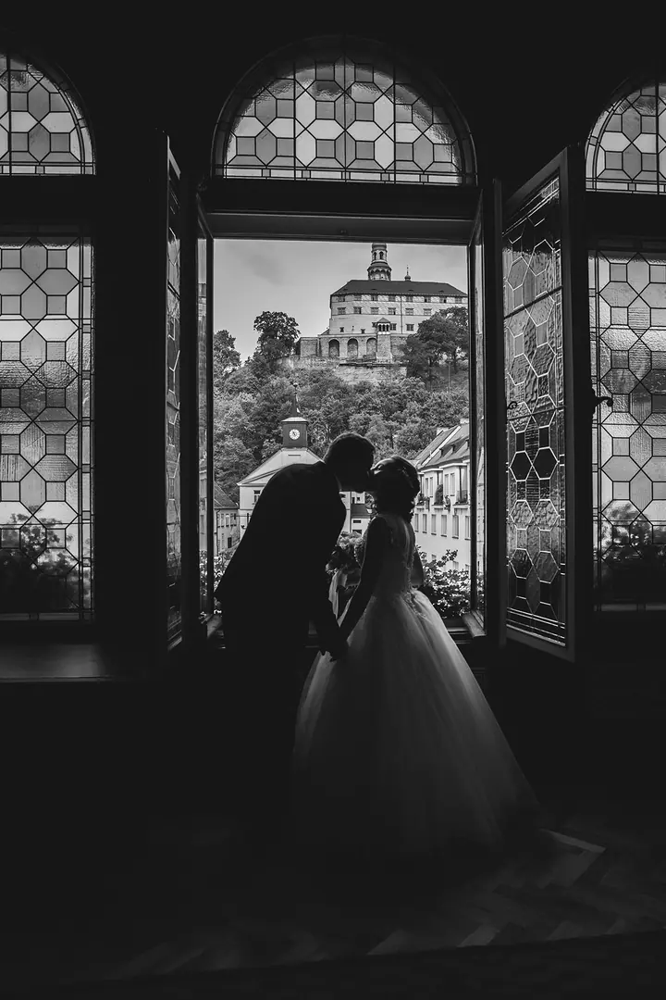
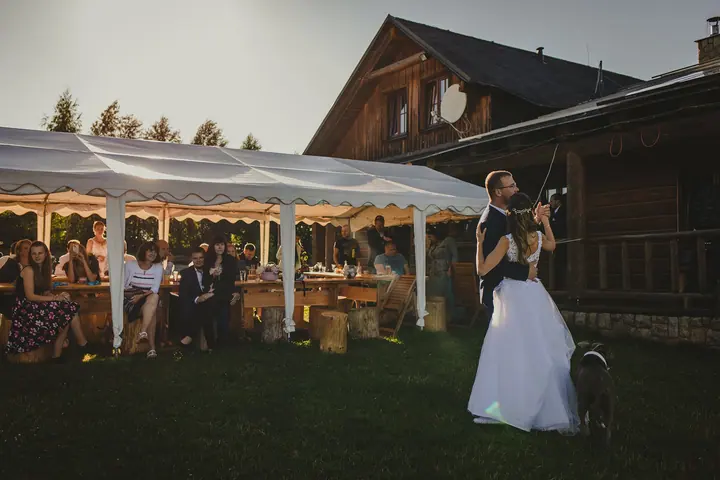

Svatby
Fotím svatby od příprav přes obřad až po večerní tanec. Jsem s vámi celý den a na fotkách pak zůstane, jak to opravdu vypadalo.

Jmenuji se Lucie Vočadlová a v Trutnově fotím svatby, rodiny a těhotenské a dětské fotky. Ráda jsem u toho, když se vám v životě něco důležitého mění, a chci, aby vám to…
Rezervovat termínSe zrcadlovkou chodím už několik let, ale pořádně jsem se do focení pustila v roce 2017. Kolem sebe mám spoustu přátel, a když chtěli fotky, vždycky si vzpomněli na mě. Fotila jsem jim celé etapy života: první fotky s partnerem, svatbu, těhotenství a potom i jejich děti.


Dřív jsem fotila hlavně mezi pejskaři a koňáky a pořád dokola to samé. Až rodinné příběhy mě posunuly dál, protože každá svatba i každá rodina je jiná. Vážím si toho, že u nich můžu být.
Vystudovala jsem grafický design, konkrétně branding. Díky tomu se dívám i na věci kolem focení, třeba na kompozici, barvy a na to, jak budou fotky působit pohromadě.
Co fotím
Fotím svatby od příprav přes obřad až po večerní tanec. Jsem s vámi celý den a na fotkách pak zůstane, jak to opravdu vypadalo.
Fotím rodinné příběhy, ať je vás doma kolik chcete. Focení je volné a v klidu, aby se u něj všichni cítili dobře.
Fotím děti tak, jak si samy hrají a objevují svět. Nepotřebují pózovat, stačí jim nechat čas.
Fotím těhotenské fotky, které vám připomenou čas čekání na miminko. Kde a jak budeme fotit, vymyslíme spolu.
Postup
Napište mi nebo zavolejte, o jaké focení máte zájem a kdy. Domluvíme se, jestli mám ten den volno.
Řekněte mi, jak si den nebo focení představujete. Společně vybereme místo, čas a vše, na čem vám záleží.
Přijedu a fotím v klidu, bez zbytečného aranžování. Vy si užíváte den a já se starám o fotky.
Fotky pečlivě vyberu a upravím. Pošlu vám je v online galerii, ze které si je stáhnete a můžete je sdílet s blízkými.
Otázky
Jsem z Trutnova a fotím hlavně tady a v okolí. Pokud máte svatbu nebo focení jinde, napište mi a domluvíme se.
Ano, ráda vás doprovodím od příprav přes obřad až po večerní zábavu. Rozsah focení si domluvíme podle toho, co potřebujete.
Vůbec ne. Většina lidí to tak má. Při focení vás navedu a nechám prostor, abyste se cítili přirozeně.
Určitě. Moc ráda fotím rodiny v různých etapách života, od svatby přes těhotenství až po focení s dětmi.
